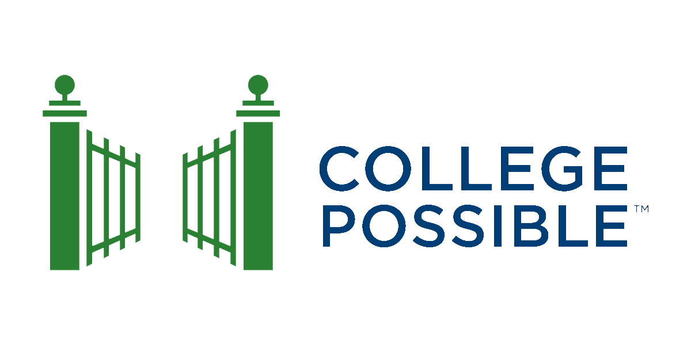

RECOMMEND IF YOU NEED HELP WITH COLLEGE DECISIONS AND PREPARATIONS
Upward Bound, a college preparation program for high school students, has been hosted at Portland State University since 1980. Upward Bound is a year-round program designed to improve students' academic and study skills in high school, to develop their career and educational plans, and to help them enter and succeed in higher education.
RECOMMEND IF YOU NEED HELP WITH COLLEGE DECISIONS AND PREPARATIONS

College Possible’s mission is to support students who dream of earning a bachelor’s degree regardless of their household income or background. College Possible is not only a free resource for high school students, but the support carries on through college as well! It’s a great way to be a part of a community of peers who are invested in their education while also receiving individualized support. It’s so easy to be a more successful student through College Possible. It’s totally okay to not know what you want to do! College Possible is one of many resources you can utilize. Do what feels right and make sure you prioritize what matters to you.
Step Up is an afterschool tutoring, mentoring, and leadership development program for 9th - 12th graders. In a one-week summer leadership academy, Step Up staff challenge youth to identify their dreams and commit to working towards those goals during the school year. Students work closely with their advocate/mentor, who engages with parents to share student progress and provide holistic support. In addition, Step Up partners with teachers and school staff to support students’ academic growth. At the end of the year, students receive one elective credit for participating in Step Up.
SUN provides a lot of support. During a normal school year we provide a meal after school and connections to clubs and partner programs. We also provide academic support through our SUN Tutoring Center and access to food through the McDaniel SUN pantry. During the Pandemic, we have supported a lot of students and their families with bill and food assistance.
RECOMMEND IF YOU NEED HELP WITH COLLEGE DECISIONS AND PREPARATIONS (10th-12th graders)
The McDaniel Advanced Scholars Program is a rigorous academic and enrichment opportunity offered to students at McDaniel High School. The program seeks to challenge students to reach their full potential while at the same time prepare and support them for eventual success in college. Students will also participate in enrichment activities promoting college options and scholarship opportunities.
The Youth Resource App is a free resource for all Portland youth, funded by Portland Public Schools Office of Student Supports Services and created by the Student Success and Health department’s mental health advisory team along with 100+ PPS students. PPS does not specifically endorse any of the listed agencies. Each organization has their own independent mission and vision. We know we are likely missing some information. Consider this version 1.0. Email: youthresourceapp@pps.net with feedback.
.png)